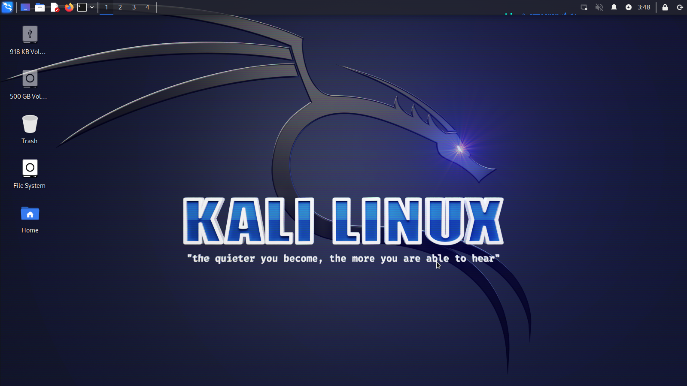

Let's Make a Kali Linux Flash Drive Using Ubuntu or Mint
With this method, you can keep a Kali Linux thumb drive to boot any PC without changing your current OS.

Introducton
What you need
Format the flash drive using the USB Stick Formatter tool
Download the torrent
Download the ISO from the torrent
Use the USB write tool to write image to drive